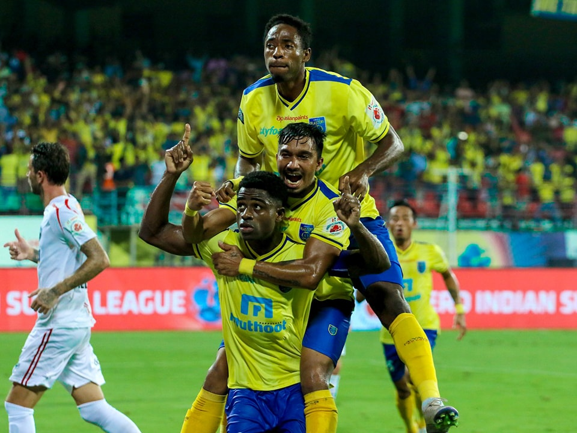
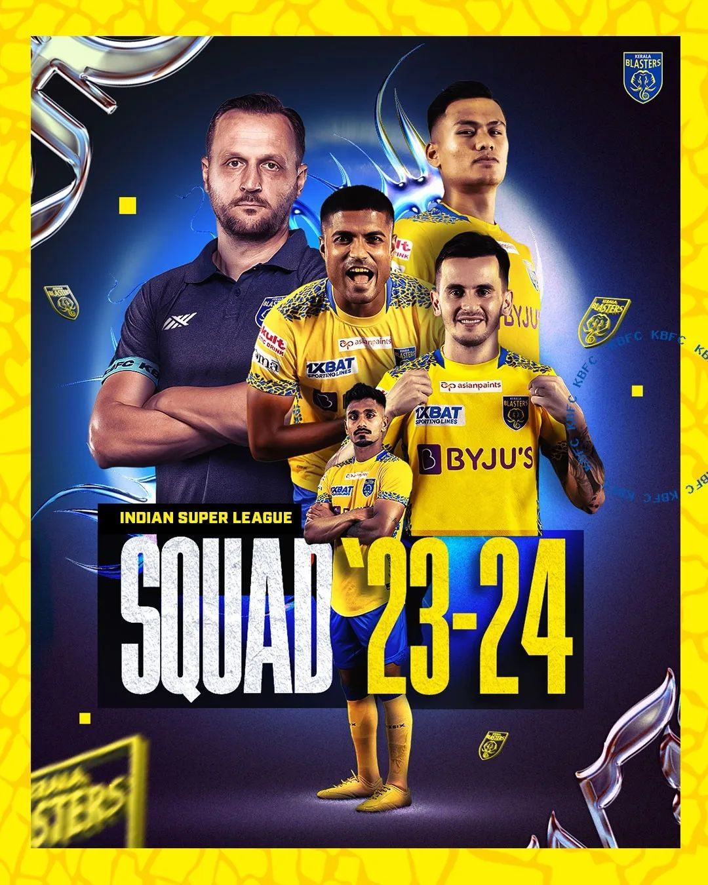
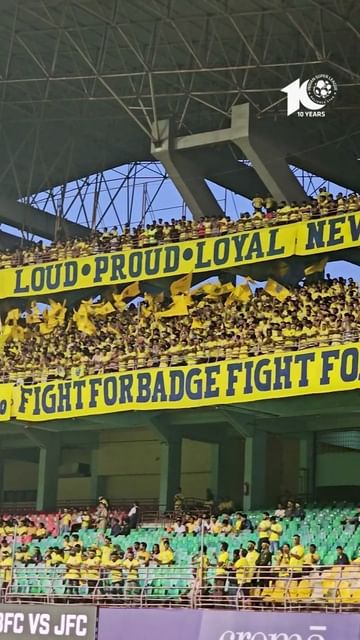

about
Kerala Blasters Football Club commonly referred to as The Blasters, is an Indian professional football club based in Kochi that competes in the Indian Super League (ISL).

Article
Founded in 2014 as one of the eight original franchises in the ISL, Kerala Blasters quickly became a focal point for football fans in the region.

gallery
Here is my some of the works. You can just see the work and contact me for your dream website.
I think you will like my stuffs. If you like the works please support as.